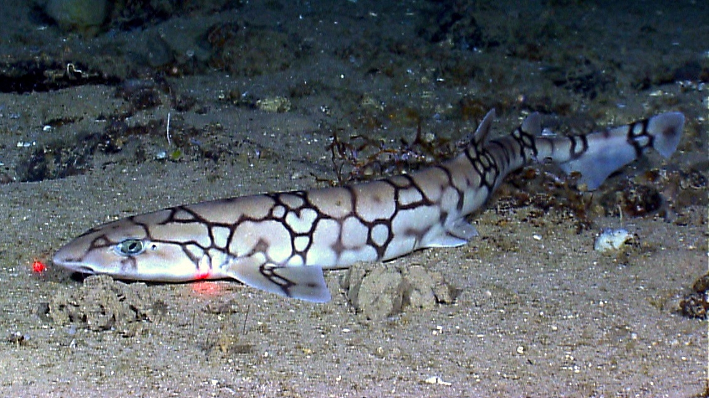
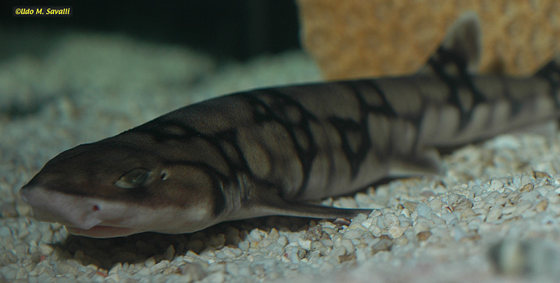

Habitat and Location
Chain catsharks live in the western Atlantic Ocean, especially along the eastern coast of North America. They can be found from areas near New England down toward the Gulf of Mexico. They prefer deeper ocean waters rather than shallow coastal areas. These sharks are commonly found near the continental shelf and continental slope. They spend much of their time close to the seafloor. Their habitats include rocky areas and other underwater environments where they can find food and shelter. Living in deeper water helps them stay away from many animals that live closer to the surface.

Diet and Hunting
Chain catsharks are carnivores, which means they eat other animals to survive. Their diet mainly consists of squid, small fish, shrimp, crabs, and marine worms. They usually hunt near the ocean floor, where many of their food sources live. Their small teeth help them grab and hold onto their prey. Chain catsharks are more active at night, which gives them opportunities to search for food in darker waters. During the day, they often remain near the seafloor. Their diet helps them play an important role in keeping the ocean food chain balanced.

- They live in the western Atlantic Ocean.
- They can be found near the Gulf of Mexico.
- They eat squid, shrimp, crabs, and small fish.
- They usually hunt near the ocean floor.